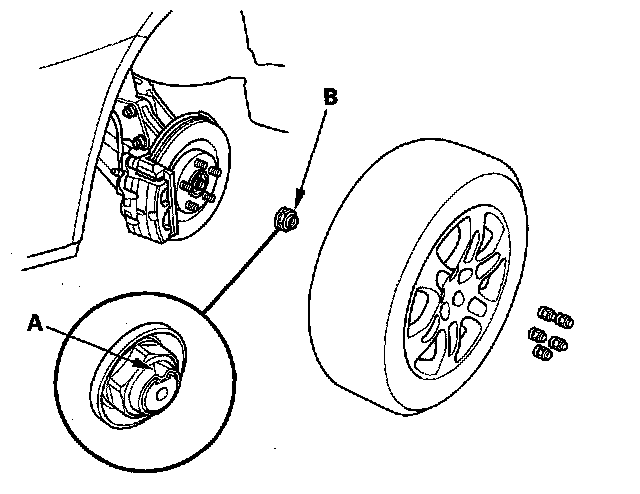
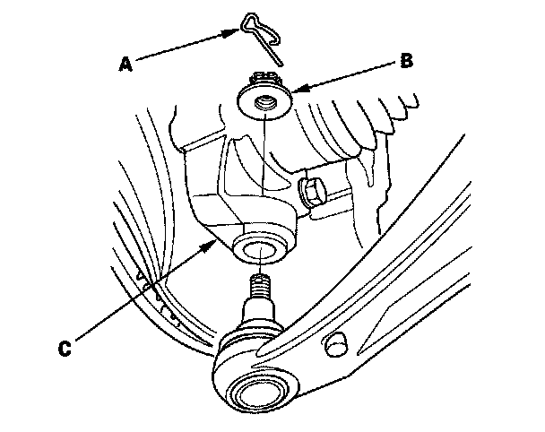
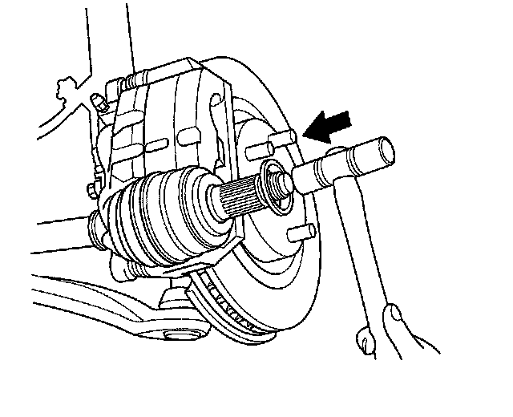
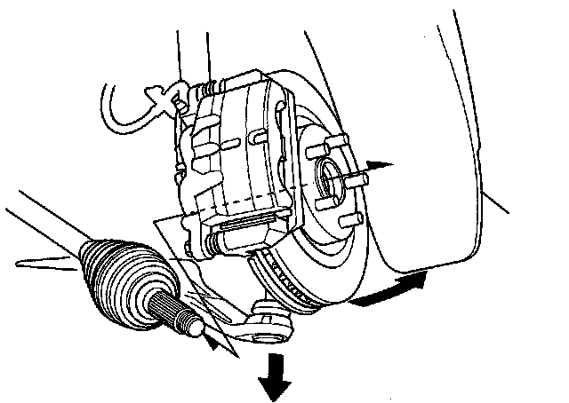
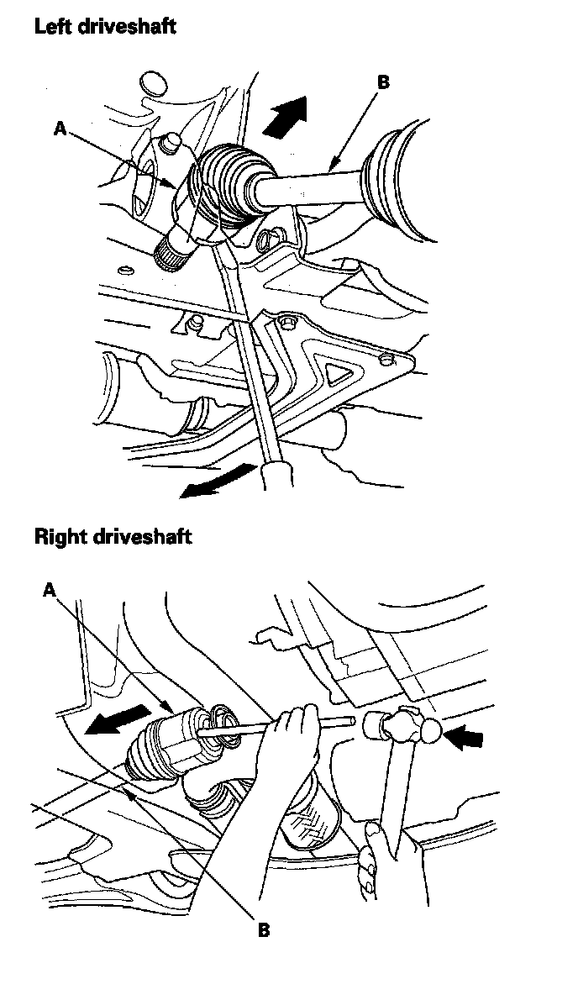

Front Driveshaft Removal
Front Driveshaft Removal1. Raise the vehicle on a lift, and remove the front wheels.

2. Lift up the locking tab (A) on the spindle nut (B) then remove, and discard the nut.
3. If you need to remove the left driveshaft, drain the transmission fluid. It is not necessary to drain the transmission fluid when the right driveshaft is removed.
4. Remove the suspension stroke sensor (with active damper system).
5. Remove the lock pin (A) from the lower arm ball joint castle nut (B) and remove the nut.

6. Separate the ball joint from the knuckle (C) with the special tool.
NOTE:
^ To avoid damaging the ball joint, install the ball joint thread protector onto the threads of the ball joint.
^ Be careful not to damage the ball joint boot when installing the remover.
7. Disconnect the driveshaft outboard joint from the front wheel hub using a plastic hammer.

8. Pull the knuckle outward, and remove the driveshaft outboard joint from the front wheel hub.

9. Remove the splash shield.
10. Pry (left driveshaft)/tap (right driveshaft) the inboard joint (A) and remove the driveshaft from the differential case or bearing support as an assembly. Do not pull on the driveshaft (B); the inboard joint may come apart. Pull the driveshaft straight out to avoid damaging the differential oil seal or the intermediate shaft outer seal.
